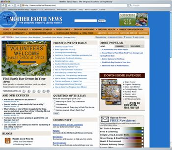
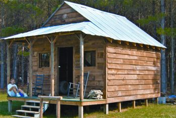
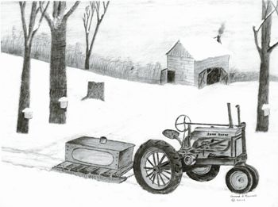
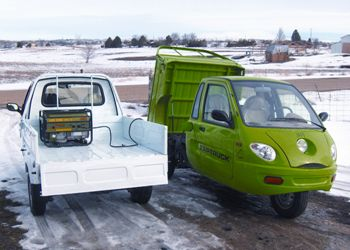
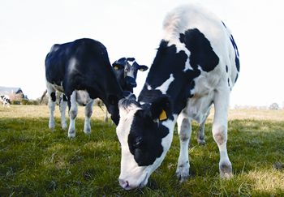

Unbelievable! Impossible! I just got the most recent issue of Mother Earth News at my ranch and devoured the article on tomatoes. But alas, when I arrived back home I realized that I’d left the article at the ranch. I thought about going online and trying to get the articles, but I dismissed the idea, because I assumed that I’d have to have my subscription number to sign on (in addition to “registering”). Imagine my shock when I visited your Web site and was able to find the article without any hassle. Wow, and I was even able to jump to prior referenced articles via the links provided. Seamless, beautiful, unbelievable! I wish the rest of the Internet could be so unfettered.
P.S. I’ll happily accept a few sidebar ads for this kind of service. Thanks for a great job.
I love, love, love, love your new Web site! I know I will be on it every night this week and probably next week too! And thank you for the online article, Where Do Presidential Candidates Stand on Environmental Issues. I can’t say it enough, I love the Web site!
I used to subscribe to the Mother Earth News magazine, but lost track of it at some point. When I couldn’t find it anymore, I thought it had just died. But I just found your Web site and am ever so happy to see it. I should have guessed you would now include this modern delivery method. I’ll be reading your articles faithfully from now on. Thanks for all your hard work in putting the site together.
Stumbling onto your Web site was like accidentally running into an old and dear friend that one has lost contact with. Take me back to where I belong and want to be!
I want to say thanks to Steve Maxwell for a great article on generators, Emergency Power Options. I’m an electrical contractor in Iowa and have installed many transfer switches for backup emergency generators.
Unfortunately, many homeowners don’t really understand that generators are indeed emergency backup generators. Maxwell did a great job explaining what they are, how to pick which one to buy, and how to use it effectively. I have the toughest time making homeowners understand everything that Steve pointed out.
The article about the book nook, Build This Book Nook & Window Seat, looked like it was designed for my house. It couldn’t be more perfect. I liked the idea of using recycled materials because money really is an issue. I also copied the article about the solar heater, something else I was looking for.
I love your magazine and anxiously await each new copy. If the world only knew what good things were between your covers, they’d beat a path to your door. (I’m helping to spread the word!) I miss getting a new issue every month, but understand that it’s more economical to do things like you are doing. Take heart, there are still tons of folks out there that are keeping the country and frugal lifestyle alive and well.
I enjoyed reading Meet Real Free-Range Eggs in the October/November 2007 issue. It is a crying shame that most of the products presented to the general public today have not been produced with our health in mind, but corporate profits. I appreciate your research comparing nutritional values of eggs from pastured hens to eggs from “factory” birds. I like being able to see the numbers and make my own evaluations.
One must also always consider who is doing the study (or paying for it), what their agenda is, and how that might affect the findings of their research. Much of what is done in the name of “science” today is not true science at all, but rather an accumulation of selective data, organized in a way that will support the theory or beliefs of the entity which is commissioning the study.
I just read Oh Deer, Not Horse Manure! this morning about deer not eating plants mulched with horse poop - wow! I’ve been using my horses’ poop for 12 years since we bought our own little spot of earth, 10 acres in rural Oklahoma City. We had three trees on the property; we’ve since planted over 100. My trees are beautiful, mature-sized and healthy, and when people ask why, I give my horses the credit! But I never once put the lack of deer problem together with my poop-mulching practice.
It never dawned on me why I don’t have deer eating my flowers, perennials and trees, though they eat plants. Thanks for this little bit of insight, it really made my day! I really like your Web site and will continue to visit it frequently.
We would love to hear from other readers who use horse manure mulch and do - or do not - think it deters.
- Mother
When reading 8 Easy Projects for Instant Energy Savings, it came to me that there was one item that seemed so obvious, but was never expanded upon: insulating the hot and cold water pipes!
If you don’t have a heated basement, like me, you keep more of the hot water hot by insulating the hot and cold water lines. The heat isn’t given up to the ambient room temperature in the winter, and in the summer you also eliminate condensation from forming on the cold water lines.
Thank you for Barbara Pleasant’s well-researched and informative article America’s Favorite Tomatoes. As a grower of tomato plants, I especially want to express my thanks for publishing the article early enough that I had time to find all the seeds. It seems like every year I get to the market only to learn that somebody is highly recommending a variety I have never heard of. This is frustrating both to me and to my customers. Thanks to the timeliness of your article, and assuming all my orders are filled, I will be able to offer every one of your top 20 tomatoes. My customers and I thank you!
I will confess, however, that finding all 20 varieties was a challenge. My tomato seed sources number 23 and I searched all of them before I was through. The only one you mentioned that I failed to locate was in the hybrid list, and that was ‘Milano.’ Where can I purchase those seeds?
You can find sources for all 20 tomato varieties, and any other seeds you’re looking for, using our new Seed and Plant Finder. - Mother
Kudos for the terrific article on America’s top tomato picks. We appreciate you citing Cornell’s Vegetable Varieties for Gardeners Web site as a key resource for gardeners to learn from each other which varieties might perform best in their gardens.
We also have a new program and Web site to get youth involved with vegetable varieties. Through the Vegetable Varieties Investigation, youth team up with gardeners to learn life-long lessons about biodiversity, surveying to collect quality data and contributing to the community. You can use the activities on the Web site in classrooms, with 4-H and other groups, or with your own kids. It’s a great way to begin cultivating the next generation of gardeners!
This is the end product of the plan I saw in Build This Cozy Cabin by Steve Maxwell. The one your article showed was 16-by-20 feet, but ours is a little smaller. My wife and I built the cabin this past summer and it is almost entirely made of recycled materials. We had never tackled a project like this, but were determined to do it. After the foundation was in, I saw your article and just followed the plans for the rest.
The foundation is built from treated 4-by-4s and 6-by-6s that I either had in my barn or that I dug up from old fencing. The floor system came from the overhead trusses of an old storage building we tore down on the property, and stud walls came from old lumber torn out from a previous remodel.
After it was framed up, I wanted the old rustic, brownish, fresh-cut lumber look, and had no idea how to get it. A gentleman down the street had just started tearing down an old barn and said I could have what I needed. The sleeping loft that extends across the back is 4-by-14 and was framed from the floor joists taken out of the old barn. The loft floor is 2-inch thick tongue and groove pine boards that I traded other lumber for. Even the steps are recycled. It is furnished from items we already had purchased from yard sales: kerosene lamps, primitive pine and oak pieces, old pictures, pitchers, and tin coffee pots and plates.
The cabin is priceless to us and has the rustic look that we wanted. Thanks for the plans and drawings in your magazine, and many thanks to Mr. Billy Moxley, our neighbor, for giving us materials from the old barn.
I have enjoyed reading the articles in Mother, especially the articles on tractors. In the 1930s, I learned to drive a tractor on my uncle’s farm in northwestern Pennsylvania. He was especially fond of John Deere tractors and kept his in excellent condition by always putting it in the shed at the end of the day. We used the tractor for all of the usual farm chores and also to pull the sap container during maple syrup season in early spring.
I like to write stories and do sketches (see Image Gallery) of farm life in the past.
For the world view on the biofuel disaster, see The Biofuel Hoax is Causing a World Food Crisis!. Unfortunately, American society is jazzed up about the biofuels fad, which is already blowing up in our faces, and most people don’t even know it.
Photographs of the Amazon basin being burned down to grow biofuels are heartbreaking to me.
The news stories about people going hungry because of our thoughtless biofuels policies make me ashamed to be an American. It makes one wonder if the IQ of the American media has dropped off the chart for some reason (or is it because the corporations that own our media want to make money in biofuels?). I have never seen an instance of such a horrible and obvious mistake happening right in front of our eyes while the media ignores it.
Harvey Ussery provided a great case for using hand tools in his article Best Low-Tech Tools, and I’d like to offer my No. 1 reason: Hand tools work for me.
On a Saturday morning I’ll collect my pick, shovel, rakes, bow-saw, shears, hatchet and water jug and toss them into the wheelbarrow. On my way to where I’m headed, I’ll have fixed up a few things - cut up a fallen branch, cleared a watercourse, laced a vine and the like. I’ll also have stopped a few times just to look and think. Even while I’m hacking away at my tasks, I’ll be watching the critters and estimating the wild harvests (blackberries, huckleberries), as well as assessing the health of the grounds.
Thank you, thank you, thank you, Mother Earth News! We found an article about Freecycle.org in your magazine and checked out the Web site. I was surprised to find so many people in my area that recycle. We just started searching yesterday and have already found lots of great stuff. The people are so friendly. We will have plenty of things to offer and there is plenty more that we want. It’s the best site ever, except MotherEarthNews.com, of course. We also found a great ReStore in our neighborhood, run by Habitat for Humanity. That place makes my heart go pitter patter.
I’ve been receiving Mother Earth News for years. Over the years, I have also collected many books on various subjects: medicine, gardening, cooking, organizing, home building/repairs, automotives, etc. I’ve been able to part with most of my book collection thanks to Mother Earth News. Your magazine covers most everything one needs to survive.
With the direction the economy is heading today, please share this with your readers in hopes that your magazine will help others as much as it has helped my family. Thank you so much for a wealth of low-cost survival methods and green living information.
I found that preheating my domestic hot water gives me a great boost in energy savings. I simply soldered in a diverter with valves and fittings, then attached 200 feet of three-quarter-inch black garden hose. (We’ve all experienced how hot the water gets in the hose when washing your car!) The hose is neatly laid in my south-facing garden - and that’s it.
For many years this has proven to be a winning project!
Approximately 18 old-order Amish families live about 50 miles from us. They are hard-working, humble and simple people. They have recently become embroiled in a battle with their local sewage authority regarding their privies. I read several articles on your site regarding composting toilets and found them fascinating. I am contacting you in an effort to find someone that could help these Amish families.
The local news has been covering the story; but the sewage authority is being hard-nosed and unforgiving. The Amish are willing to make some compromises, but will not compromise their beliefs or religion. The sewage authority wants to ban their outdoor privies and has issued a $1,000 per day fine and threatened jail time if they do not cease using the facilities at home and at their school. I am wondering if composting toilets would be within code. We are desperately trying to help these people continue to live according to their beliefs. If there is any organization or individual that you feel could help please e-mail me at s.denise40@yahoo.com ASAP. Thank you, and keep up the great stories on the Web.
I would like to add another tip to the list included in How to Find Your Dream Homestead. My wife and I wanted to find a piece of property we could own in our retirement. We have a friend that, credentials-wise, is one of the best land appraisers in the United States, and we thought he would give us good advice. We were not disappointed.
He said, “I could give you a lot of information. I will not. Here is what you should do: Start looking at property. In the process, you will discover what you do not want. In time this will lead you to discover the property you do want.”
We followed his advice, and on my days off from work we looked at property. Within a year we discovered an ideal piece of property, and purchased it over a period of time. Today we have our retirement home on eight beautiful acres, with all that we could want.
Build Better Soil with Free Organic Fertilizer was very helpful. I just want to let readers know that Starbucks cafes save coffee grounds for their customers to take home and use as compost. Usually there are pretty significant amounts available, completely for free. We love it when customers ask for it - instead of getting thrown out it gets reused.
There is plenty of land for grass-fed cattle in the United States. Management of our natural resources is not one of our nation’s strong points. By changing how we manage our land for grazing, we can increase the productivity of the land, increase the carbon sequestration in our soils, decrease erosion and improve the health of our population.
What we need is more small farmers using Management Intensive Grazing (MIG) techniques: rotationally grazing the land, not for the maximum number of animals, but for the optimal health of the land. By nurturing the land, we increase its productivity tremendously, while improving the health and productivity of the livestock grazed on it.
Put in simplest terms, MIG keeps the grass growing at peak productivity as close to 24/7/365 as is practical for each field in each location. Obviously you can’t grow grass under 10 inches of snow, but you can choose grasses for winter grazing that are cold hardy. If your fields have run-off after as little as an inch of rain, you have a problem catching and holding your natural water resources. That too can be fixed. It’s not as easy as running cattle on the same land day in and day out, but it can be done. And the profits are potentially much greater, as you increase the land’s productivity.
ZAP Xebra trucks are my choice for plug-in electric transportation. I use three of them. I live 10 miles out of town, so I drive in and swap trucks for a hot charged one. It’s kind of like Pony Express, except that I use Xebras.
When I finish with business in town, I swap trucks again to head home. Sometimes I put a generator in the back of the Xebra so I can recharge the batteries if I think I might go past its range. The 3 tires on the truck hold 52 pounds of air, which means they are excellent coasters. Coasting is where the extra range comes in, and learning how to drive (staying off the brake whenever possible).
The money I save on gas will come very close to making my monthly payments for one ZAP truck that I financed. They’re fun to drive - as in a soapbox derby, I just coast down the hill and enjoy it, go home and plug in. (They do like a cozy, warm garage in cold weather.)
What You Need to Know About the Beef You Eat really opened my eyes to the cruel and disgusting practices behind the beef industry. The sad thing is that meat produced from cows “raised” or actually tortured this way is the norm, not the exception in this country. These unethical practices will continue as long as consumers blindly buy these products without question. I have shared this article with everyone I know in hopes that they too will become outraged, will take action and eschew meat that harms themselves, the cattle and the Earth.
Your article on feedlot cattle made for pretty frightening reading. It also made me feel very, very lucky that I live in a country (New Zealand) where feedlot cattle do not exist. We’re not perfect, but I know there are no hormones in the meat I buy (beef, chicken, lamb, anything) and antibiotics are only used when an animal is sick (and can only be prescribed by a veterinarian). I also know that a veterinarian has checked every single animal before and after it is slaughtered, and that every single animal I eat has lived a natural life in a herd, eating grass. True, some may have been raised by humans, rather than their mother, but then their mother is the reason I can drink hormone-free, antibiotic-free, fresh milk every day. New Zealand has a world-leading breeding program for cattle and a lot of enthusiastic breed-society members who share their genetics with each other for the good of their breed.
There is nothing like cutting into a steak that melts in your mouth because nature made it that way, and no other reason. I’m a huge fan of your magazine and its work. Long live Mother!
|
 MOTHER EARTH NEWS “Seamless, beautiful, unbelievable!” is how one reader described the new Mother Earth News Web site. |
 JERRY AND ZYPHIA WEST Jerry and Zyphia West built almost 100% of their cozy cabin from recycled materials. |
 CONRAD RUSSELL Mother reader Conrad Russell creates stories and sketches of homesteading life. |
|
 CLINT MARCHBANKS Clint Marchbanks likens his ZAP Xebras to a modern-day Pony Express. He drives one truck while the other charges, and then switches when the first is ready to be plugged in. |
 ISTOCKPHOTO Karen Page argues for employing Management Intensive Grazing for the health of grazing land and, in turn, the animals grazed on it. |
|